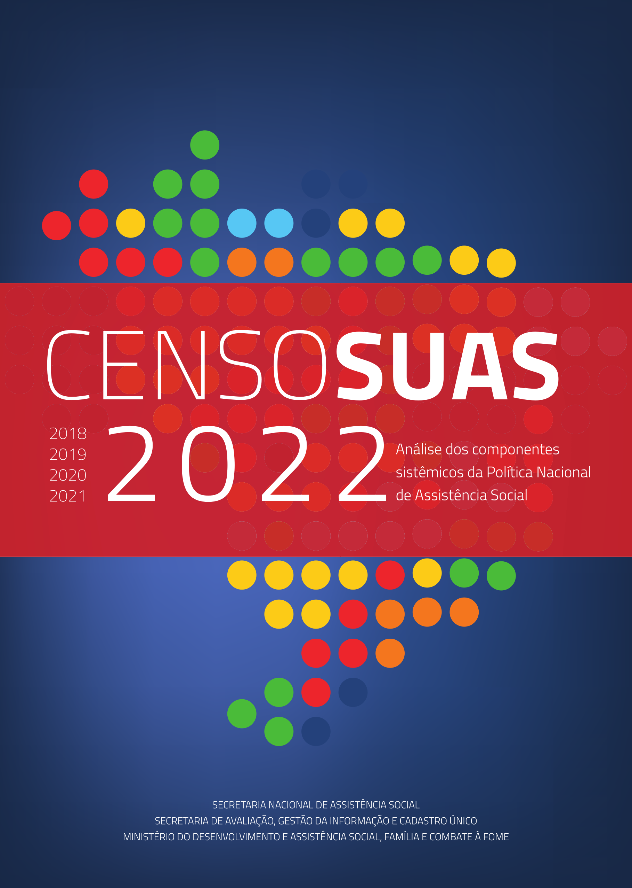

CENSO SUAS 2022
ANÁLISE DOS COMPONENTES DA POLÍTICA NACIONAL DE ASSISTÊNCIA SOCIAL

Ficha Técnica
Coordenação-geral do Censo SUAS 2022
Shirley Samico
Concepção, Planejamento e participação em reuniões
Ana Angelica, Ana Carolina Cambeses, Ana Gabriela Sambiase, Ana Paula Campos, Clara de Sá, Dionara Borges, Edgilson Tavares, Elizangela Cardoso, Fabio Lobo, Ieda Castro, Joana Costa, Lais Maranhão, Lucas Lino, Luciano Oliveira, Marcelo Gadelha, Marcelo Oliveira, Marcílio Ferrari, Mariana Peixoto, Paulo Clemente, Raimundo Nonato, Raquel Soares, Ricardo Lovatel, Rogério Campos, Sabrina Medeiros, Shirley Samico, Simone Alburquerque, Simone de Castro, Thiago Silvino, Ullysses Ferreira, Valdson Silva Cleto, Vinicius Pawlowski e Zilane Andrade.
Desenvolvimento de aplicativos informatizados, coleta e tratamento de dados
Caio Nakashima, Carlos Henrique Santana, Carlos Brasileiro, Cristiane Silva de Moura, Danilo Galvão da Cunha, Davi Lopes Carvalho, Dionara Borges, Érika Paes Latim Castro, Frederico Palma, Marcelo do Nascimento Saraiva, Marcelo Gadelha, Marcos Coimbra, Murilo da Silva Mascarenhas de Morais, Paulo Clemente, Pedro Henrique Ribeiro Ferreira, Ricardo Carvalho, Roberto Wagner, Tiago Hackbarth.
Desenvolvimento de projeto de programação para análise de dados e produção da publicação
Valdson Silva Cleto
Elaboração e revisão dos textos
Shirley Samico, Valdson Silva Cleto, Erica Moreira e Zilane Andrade.